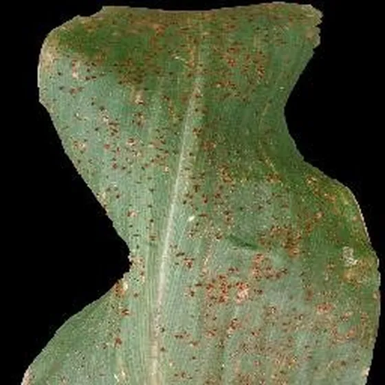

The diagnosis appears here.
No photo handy? Pick any leaf in the gallery below.
No photo handy? Pick any leaf in the gallery below.
Photograph a crop leaf. Find out what is wrong with it, and what to do next.
Diagnose a leaf
Take or upload one clear photo of a single leaf. The model looks at it at 224 × 224 pixels and names the most likely of 23 conditions.
The steps light up while you wait; they show the order of the pipeline, not live progress. The first request after a quiet spell can take up to a minute while the free server wakes.
One reference photo for every condition the model knows. Hover to compare with the healthy leaf of the same crop. Tap a card to run the model on the full-size original.
The same steps the team's model was trained with. Nothing on this page invents a number: every percentage comes back from the model.
Refuse anything that is not a readable JPEG, PNG or WEBP, under 64 px, over 20 MB, or absurdly large.
Shrink to 224 × 224 with nearest-neighbour resizing, as Keras did when the model learned.
Swap RGB to BGR and subtract the ImageNet channel means, exactly resnet50.preprocess_input.
An ImageNet ResNet50 fine-tuned by the team, ending in 23 outputs that add up to 100%.
If the top answer is under 60%, the page says it is not sure and shows the runners-up.
Symptoms, early signs and treatment come word for word from the team's own advice table.
Knowing where a model breaks is part of using it safely.
Show it a cat, a hand or a crop it never saw, and it still answers with one of its 23 conditions. It has no "this is not a leaf" option.
The 60% line was set by hand. There was no held-out set to tune it on, so treat it as a caution sign, not a guarantee.
They prove the pipeline is wired correctly. A real accuracy figure needs hundreds of unseen field photos per crop.
Treatments come from the team's table, not from an agronomist who has seen your field. Check doses and local rules before spraying.